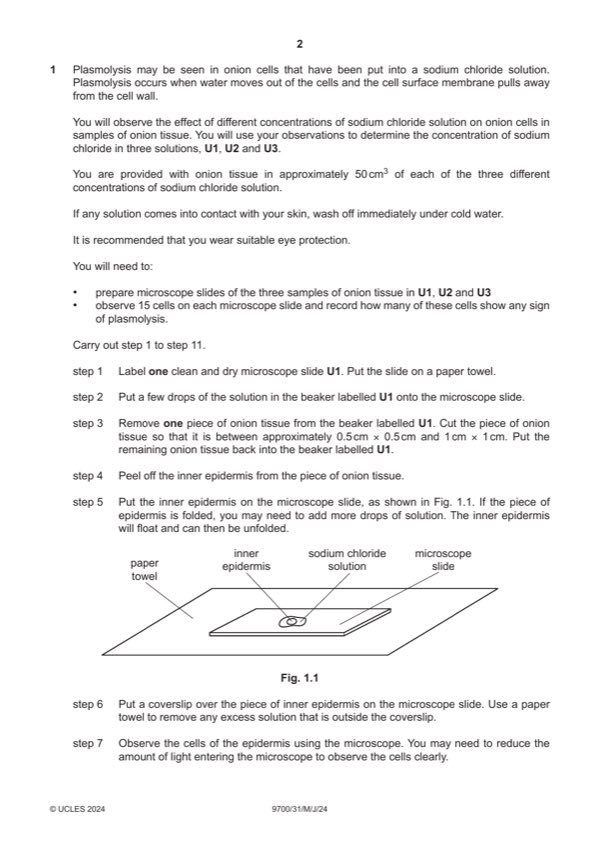

Question 1

Original paper page 2
Part 1(a)(i) — solution
1 heading for independent variable: solution / concentration of sodium chloride (before heading for dependent variable) ; 4
Mark points
- Include the ideas shown in the solution above.
Part 1(a)(ii) — solution
correctly identifies the three concentrations of sodium chloride ; 1
0.10 mol dm–3 is U2
0.50 mol dm–3 is U3
1.00 mol dm–3 is U1
Mark points
- Include the ideas shown in the solution above.
Part 1(a)(iii) — solution
1 minimum size and all lines sharp and continuous ; 5
Mark points
- Include the ideas shown in the solution above.
Part 1(a)(iv) — solution
water potential lower in solution U1 than the onion cells ; 3
any two from:
Mark points
- Include the ideas shown in the solution above.
Part 1 — solution
water moves (out of the cells) from a high water potential to low water potential ;
Mark points
- Include the ideas shown in the solution above.
Part 1(b)(i) — solution
shows 2.4 minus 2.3, divided by 2.3 and multiplied by 100 ; 1
Mark points
- Include the ideas shown in the solution above.
Part 1(b)(ii) — solution
shows addition of 4.2 and 4.2 and the answer to (b)(i) and divided by 3 ; 1
University Press & Assessment 2024 Page 6 of 8
9700/31 Cambridge International AS & A Level – Mark Scheme May/June 2024
Mark points
- Include the ideas shown in the solution above.
Part 1(b)(iii) — solution
1 label on x-axis: sucrose concentration / mol dm–3 4
and
label on y-axis: mean percentage change in mass ;
Mark points
- Include the ideas shown in the solution above.
Part 1(b)(iv) — solution
correct estimate from the graph ; 1
Mark points
- Include the ideas shown in the solution above.